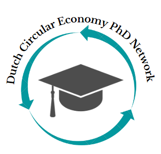

{{ event.title }}
{% if event.event_type %}{{ event.event_type }}
{% endif %}Connecting early-career researchers working on the circular economy transition across the Netherlands.

Join the network
Are you an early-career researcher exploring a topic related to the circular economy at a Dutch university? Would you like to help nurture and grow an exciting circular economy network by participating in networking events, research talks, and excursions? Then we invite you to join the Dutch CE PhD Network.
About
The network is part of the Dutch Academic Network on Circular Economy (DAN‑CE). It connects early-career researchers from Dutch universities conducting research on the circular economy.
Universities represented
… and others.
Access to a growing network of peers passionate about circular economy research.
Share knowledge, ideas, and experiences from your PhD work.
Opportunities to explore synergies and future collaborations.
Broader perspectives through exchange with researchers from very different disciplinary backgrounds.
Future Events
{{ event.event_type }}
{% endif %}No upcoming events right now — check back soon.
{% endif %}Past Events
Council
The council is a group of early-career researchers from different Dutch universities who plan the events and coordinate the network.
Contact
Interested in collaborating, or want to share an update, event, or opportunity with the network?